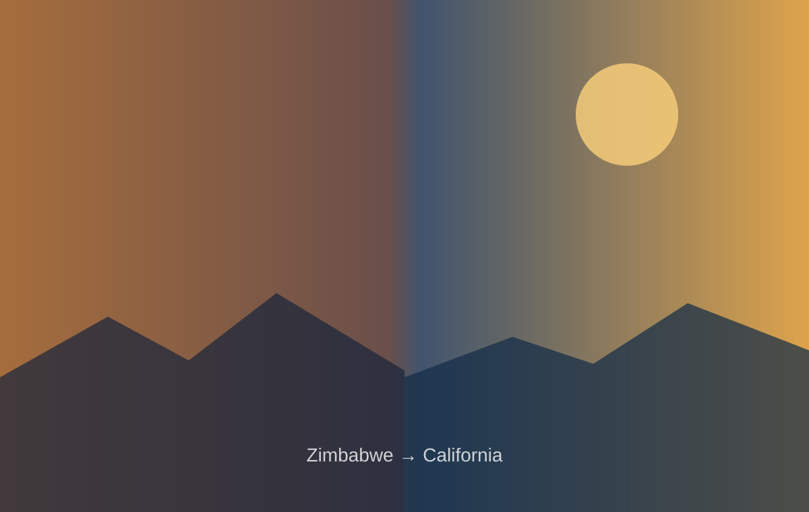

Ask before assuming.
Good strategy starts with understanding how the system actually behaves—not how the org chart says it behaves.
About
Finance and education. Public service and governance. Research and implementation. Zimbabwe and California. The breadth matters because complex problems rarely stay inside one lane.
My guiding principle is simple: leave things better than you found them. The work is figuring out what “better” requires in the system in front of you.

Where it starts
I was born in Bulawayo and grew up in Zimbabwe through some of the country's most challenging economic years. I watched elders who had done everything “right” face circumstances far beyond their control—and still find ways to care for family, build community, solve problems and keep moving.
I learned resilience from watching it practiced. I learned that hope is useful when it creates agency. And I learned that even in difficult systems, there is usually an opportunity to leave something better than you found it.
The career
Each chapter expanded the scope: from managing a business, to public finance, to statewide program implementation, to executive leadership, governance and applied research.
Started in private-sector management, owning a P&L, leading teams and learning that strategy only matters when people can execute it.
Moved into California state government, working in budgets, fiscal systems, policy implementation and large-scale public delivery.
Advanced into administration responsible for major statewide initiatives, funding systems, stakeholder networks and programs serving communities across California.
Served as a board director and secretary for a community credit union and now serves as a trustee on the CalSTRS Teachers' Retirement Board, bringing a governance lens to organizational leadership.
Completed a Doctorate in Leadership and Innovation at the University of the Pacific, connecting participatory research with the real-world challenge of responsible AI adoption in public institutions.
What guides me
I do my best work where the problem is important, the stakeholders are different, and the path forward is not obvious.
Good strategy starts with understanding how the system actually behaves—not how the org chart says it behaves.
Time, money, technology and attention are finite. Leadership is partly the discipline of putting them where they create the most public or organizational value.
Optimism is not ignoring constraints. It is refusing to treat constraints as the end of the conversation.
I welcome conversations about speaking, leadership, human-centered innovation, public-sector transformation and research.